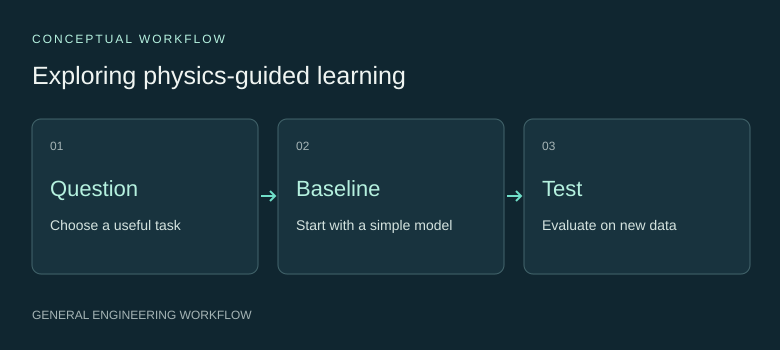

AI for Science: emerging interests
Exploring how physical knowledge and reliable scientific data can guide machine learning for materials analysis.
Choose a useful learning problem.
I am interested in learning tasks where materials knowledge helps define the inputs, constraints and evaluation criteria. Microstructure analysis is one area I would like to explore further.
This direction builds on my experience in simulation, regression and image-based structural measurement.
Start with the question and a baseline.

My intended starting point is a scoped scientific question, traceable data and an interpretable baseline. More complex approaches would be considered in relation to that starting point.
Design the test before interpreting a model.
Evaluation would consider data provenance, separation between development and testing, generalisation and physical plausibility. The intended use should determine which comparisons matter.
An emerging direction for further development.
This is exploratory work at the stage of question formulation and workflow planning. Training and benchmarking a predictive model remain future steps.
My existing skills in scientific computing and data analysis provide a basis for developing this interest.